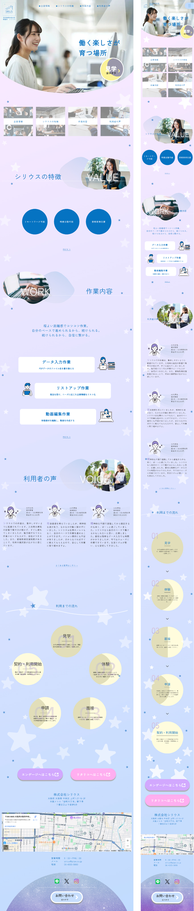

WORKS


- 制作目的（サイトイメージ）
- 8月に行われた学校での実制作にて、実際の企業（株式会社シリウス）様からの依頼を受け、5人1組のチームで制作した作品である。 就労継続支援A型事業所であるシリウス様のサイト制作目的は「安心感のある発信で利用や見学のきっかけをつくり、事業所の魅力を高める」こと。 差別化とターゲットへの魅力発信を両立させるため、ヒアリングから課題整理、コンセプト決定、ペルソナ設計、デザインカンプ作成、コーディングまで一連の流れをチームで協力して進めた。 デザインコンセプトは「明けていく空」をテーマとし、パステルカラーと曲線で柔らかさを表現し、星や月などのモチーフを配置することで、希望を感じられるデザイン且つ、社名である”シリウス”とも関連付けたデザインに仕上げた。
- ターゲット
- 大きな不安を抱えつつも、安心して働きたいと考えている40歳前後の女性。特に精神的な療養から再就職を目指す層を想定。
- ペルソナ
- 名前：田中 美和
年齢：40歳
居住地：大阪市中央区
状況：前職の営業事務職が激務で病に。現在はうつ病の療養中（精神障害者保健福祉手帳2級）。
課題：体力や気力の波、集中力低下、3年間のブランクから来る不安。再就職への焦りと不安を抱えている。
ニーズ：大阪市中央区から通いやすい場所で、同じ境遇の仲間と温かい雰囲気の中で働きたい。将来的な再就職も視野に入れつつ、自分のペースで安心して働ける環境を求めている。
- 制作時間
- 約6日間(コーディング)
(全体の実制作期間：約3週間)
- 使用したソフト
- デザイン：Figma
コーディング：Visual Studio Code（HTML / CSS / JavaScript）
- 担当した箇所
- コーディング
・インデックスページ（トップページ）の制作
・共通項目（ヘッダー、フッター）の実装
・各メンバーが担当したページの最終統合作業
- 苦労した点、工夫した点、制作に関して気付いた事など…
- 苦労した点:
チーム制作のため、意見交換の中でボツになる案もあり、クライアントにとって最適な取捨選択を行う際に、チームワークを乱さないよう配慮が必要だった。 また、デザインカンプ通りにコーディングする際、レスポンシブ対応やコーディング可能なデザイン設計をある程度は理解していることの重要性を痛感した。
制作に関して気付いたこと:
現在の力量では難しい表現を画像で代替する場面があったが、画像を多用するとサイトの読み込みが重くなり、閲覧者の離脱につながるため、軽量化とデザイン性のバランスが重要であることを学んだ。 また、グループ制作を通じて、自分の得意分野を活かしながら他者と協力する大切さを実感した。